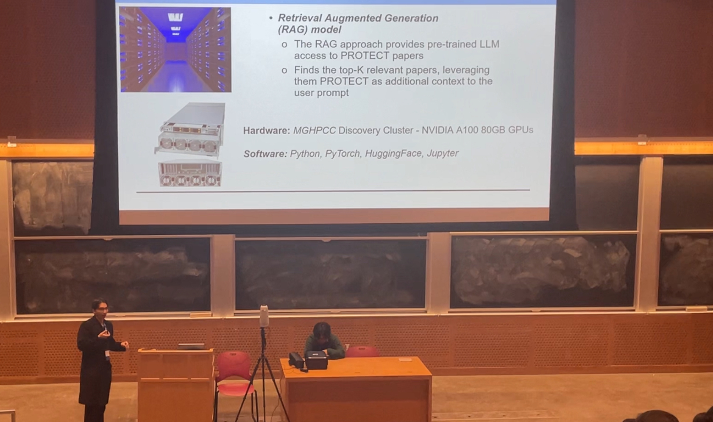

My Projects
Sustainable AF
A web application that allows users to find sustainable products and services in their area with a solar heat map and a carbon footprint calculator.
Technologies:
●Google Cloud Platform
●React.js
●TypeScript
●Python
●Machine Learning
Maritime
Mobile application which allows users to track live microplastic concentrations in the ocean and allows for waste identification.
Technologies:
●Python
●Flask
●Expo
●TypeScript
●CNN
OracleNet
Global knowledge graph which takes hypothetical news headlines and shows all plausible impacts on the economy, industries, supply and politics
Technologies:
●Python
●Flask
●Graph Neural Network
●TypeScript
CoralFold
3D Realtime Global Coral Bleaching Simulator Visualization using Gray-Scott Diffusion
Technologies:
●Python
●Google Cloud Platform
●Machine Learning
●Jupyter Notebooks
●React
Currently Working On
◆CUDA Sparsity Matrix Operation Compiler
◆NvBit Compiler
◆Enhanced Workload Handling via Integrating LLM into Slurm